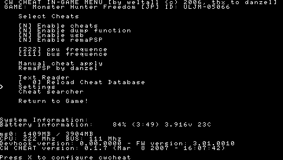

PSP CWCheat
Si te gusta jugar a los juegos con trucos, necesitas este plugin.
Para esta Guia
Requisitos para este tutorial
- PC o Notebook (Para pasar Archivos)
Programas para este Tutorial
Archivos Para descargar
| Archivos | Servidores |
|---|---|
| CWCheat | Mega |
| Web Oficial | gamebrew.org |
| Web BD | github.com |
Para Empezar este Tutorial
- Descargamos los archivos
- Descomprimimos los archivos .rar o .zip
- Podemos descargar cualquiera de las 2 opciones que tenemos
- CWCheatV023ModCFPlusPSVitaEs.rar (recomendado)
- Opcion 2/Plugins PSP.rar
- Con la última versión disponible
- Una vez descargado nuestro archivo
- Instalación
- Extrae el contenido del rar, descargando tu versión correspondiente. Copia el contenido del RAR en la raíz de la Stick. OJO, si tienes más plugins se sobrescribirán los archivos de texto.
- Aviso, si tienes más plugins, copia los archivos manualmente y edita el game.txt, game150.txt y el pops.txt. En game y en game150 añade
ms0:/seplugins/cwcheat.prxy en pops añadems0:/seplugins/cwcheatpops.prx - Desconecta la PSP y apaga la completamente. Enciende la con el botón
 pulsado y te aparecerá el menú recovery. Ve a plugins y habilita cwcheat.prx (en game para cualquier PSP, y en game150 para PSP "normal") y cwcheatpops.prx(pops).
pulsado y te aparecerá el menú recovery. Ve a plugins y habilita cwcheat.prx (en game para cualquier PSP, y en game150 para PSP "normal") y cwcheatpops.prx(pops). - Ya lo tienes instalado y activado.
- Como se usa
- Este plugin, viene con una lista de trucos de serie. Además, incluye una aplicación, con la que poder descargar la versión más actualizada de la base de datos de los trucos y otra aplicación para añadir los trucos de tu juego.
- Los trucos solo funcionan, si el código del juego coincide con el código que tiene la base de datos de trucos.
- Cuando inicies el juego, dejando pulsado el botón
 durante 3 segundos, te aparecerá el menú del CW Cheat. Ahí podrás seleccionar que trucos quieres activar. Si quieres activarlo, tienes que seleccionar Y (Yes), si lo quieres desactivar selecciona N (No).
durante 3 segundos, te aparecerá el menú del CW Cheat. Ahí podrás seleccionar que trucos quieres activar. Si quieres activarlo, tienes que seleccionar Y (Yes), si lo quieres desactivar selecciona N (No). - Como agregar guías a juegos
- Es sencillo. Teniendo una ISO en ejecución, activamos el CWCheat. Arriba a la derecha, veremos el ID de nuestro juego (tomamos como ejemplo Virtua Tennis 3, que tiene una ID: ULES-00763).
- Bien, debemos meter un archivo de texto (de Bloc de Notas) en la ruta:
ms0:/seplugins/cwcheat/text/renombrado EXACTAMENTE a: ULES-00763.txt (en vuestro caso, pondríais la ID del juego en cuestión). Si queréis usar varios textos para ese juego, podéis añadir más de la forma: ULES-007631.txt, ULES-007632.txt…Teniendo en cuenta que siempre debe haber uno llamado ULES-00763.txt (repetimos, en vuestro caso pondríais la ID del juego que estéis ejecutando). - Desde el menú del CWCheat, pulsando 3 segundos mientras ejecutamos la ISO, tenemos acceso al lector de textos.
- Actualizando la base de datos
- En PSP "normal", tenéis una aplicación en el menú juegos que sirve para actualizar la base de datos de los trucos, con la última versión de la WEB oficial. Necesario tener una conexión WiFi previamente configurada.
- Nota: Si no os funciona la aplicación desde el menú juegos, podéis bajar el archivo de aquí, y colocar la base de datos en
ms0:\seplugins\cwcheatmanualmente. - Instalar tus propios códigos
- Posiblemente, haya algún juego que no tenga trucos en la base de datos, por eso ahora aprenderemos a editarla y poner tus trucos preferidos.
- Necesitamos:
- PC.
- CW Cheat Database Editor 2.0
- Net.Framework 2.0 (Para el funcionamiento del Database Editor)
- Windows Installer 3.0 (Para poder instalar Net.Framework)
- Instalamos el Windows Installer y después el Net.Framework.
- Nota: Es posible que para instalar el Windows Installer 3.0 tu Windows tenga que ser original.
- Una vez hecho esto ya podremos iniciar el Database Editor y modificar nuestros trucos de los archivos Cheats.db y cheatspops.db.
- Nos aparecerá esto.
- Damos a buscar un Database y buscamos nuestro Cheats o nuestro cheatspops, que este en la carpeta
ms0:/seplugins/cwcheat. - Una vez que lo hemos seleccionado, le damos al + y se nos abrirá la lista de todos los juegos y sus códigos.
- Para añadir uno nuevo, haz clic en el botón derecho del ratón y le das a Add Game.
- Después pincha en la carpeta del juego que creaste, con el click derecho y selecciona Add Codename.
- Ahora pincha con el click derecho del ratón sobre el Nombre del código y das a Add Code.
- Añades el código del truco y ya lo tienes. Si quiere agregar más trucos a ese juego, simplemente vuelve a poner otro Codename y después dentro de este, su respectivo código.
- Cuando hayas acabado, das a Save database as... y seleccionas donde quieres guardarla (sobrescribe la que ya está por defecto).
- Ya tienes tus trucos listos para usar.
- Posibles Dudas
- Mi Psp se cuelga cuando salgo del menú CWCheat.
- Eso pasa porque inicias el menú antes de cargar la partida. Para que no se cuelgue, inicia la partida del juego que sea y una vez dentro, pulsa .
- Cuando activo un código el juego se bloquea.
- Eso sucede, porque el código estará mal instalado y el Cw Cheat lo reconoce mal provocando que tu PSP se bloquee.
- No me aparece el menú Cw Cheat
- Acuérdate de pulsar una vez iniciada la partida.
- Y listo a disfrutar la aplicación s
×